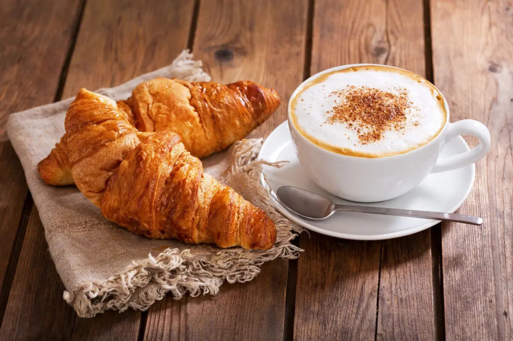
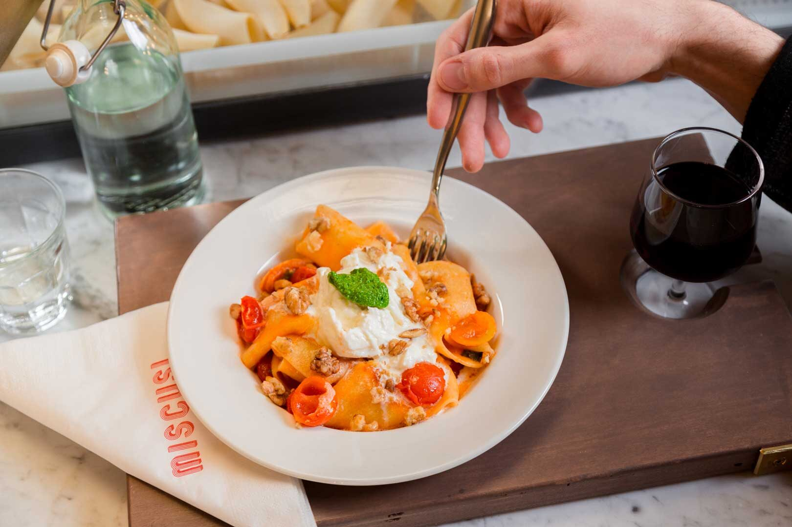
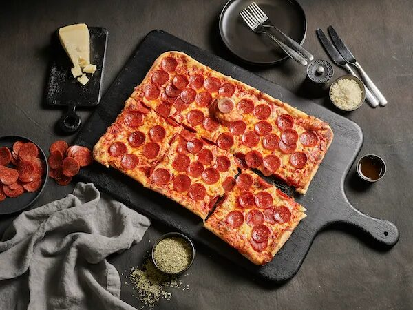
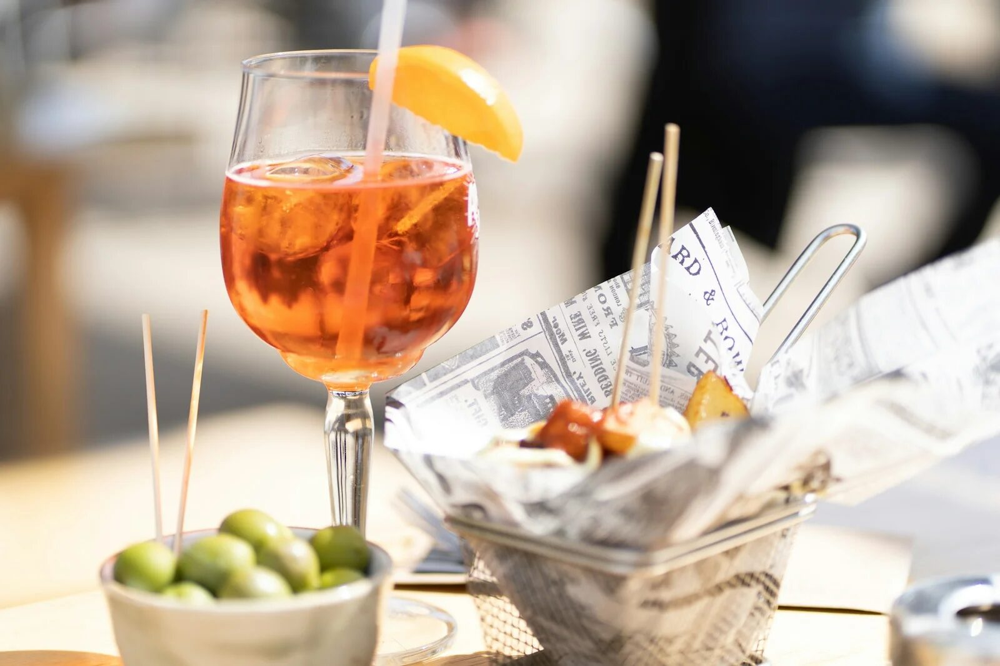
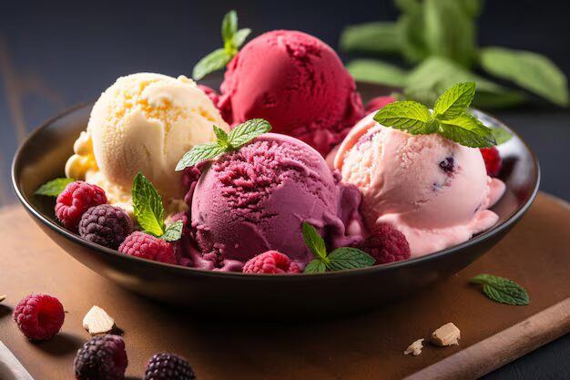

MILAN EXPLORER
MILAN EXPLORER
Taste of Milan: Food & Drink Guide

Morning Ritual: Coffee & Cornetto
Start your Milanese day like a local! Dive into one of the city's countless bustling cafés for a truly authentic experience. Grab a rich, aromatic espresso or a creamy cappuccino – often surprisingly cheap – paired with a fresh 'cornetto' (Italy's answer to the croissant). This perfect combo can often be enjoyed for around €4.
While choices abound, locals love places like Cornetiamo for their beautiful pastries and welcoming atmosphere. It's the perfect fuel for a day of exploring!

Handmade Pasta Perfection
You can't visit Italy without indulging in pasta! While Milan has endless options, seek out places that celebrate freshness and tradition. A standout favourite is Miscusi, renowned for its vibrant setting and delicious, homemade pasta crafted right in front of you.
Choose your pasta shape, pick a mouthwatering sauce, and savour the authentic taste of Italy. It's a simple yet unforgettable culinary delight that defines Italian comfort food.

More Than Just Naples: Milanese Pizza
While Naples may be the birthplace of pizza, Milan offers its own delicious takes on this beloved dish. You'll find excellent traditional Neapolitan-style pizzas with thin crusts and simple toppings, but don't miss trying the local favourite - Pizza al Trancio.
Often baked in large rectangular pans and sold by the hearty slice ('trancio'), this style features a thicker, focaccia-like crust. Perfect for a quick, satisfying, and truly Milanese bite!

The Art of Aperitivo & Milanese Drinks
You really have to try Aperitivo when you're in Milan! It's a popular pre-dinner tradition, usually happening between 6 pm and 9 pm, and a big part of local life. Order a classic drink like an Aperol Spritz, a Campari Soda, or the Milan-invented Negroni Sbagliato.
Your drink unlocks access to a often-generous buffet ('stuzzichini') featuring olives, nuts, cheeses, cured meats, mini pizzas, pastas, and more. It's the perfect way to relax, socialise, and ease into the evening. Find a bustling bar, grab a drink, and enjoy!

The Grand Finale: Gelato!
No trip to Italy, especially Milan, is complete without indulging in traditional gelato. Forget standard ice cream, true Italian gelato is a revelation! Made with fresh ingredients and less air, its flavours are incredibly intense and the texture is unbelievably smooth.
From classic flavours like pistachio and stracciatella to seasonal fruit sorbettos, find a local 'gelateria' and treat yourself. It's pure, simple, delicious happiness in a cup or cone!